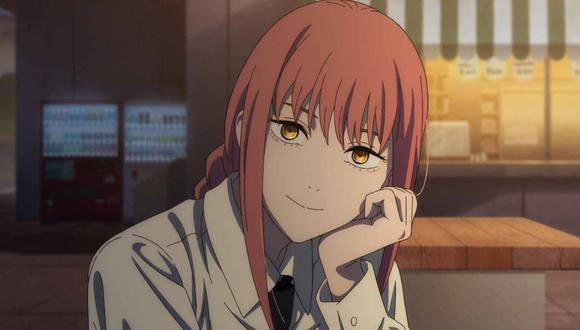

BIENVENIDO A LA PAGINA DE LOS DEMONIOS
Los Demonios (悪魔, Akuma o デビル, Debiru) son una raza de criaturas sobrenaturales que aparecen en todo el mundo. Los demonios nacen en el infierno y cada uno de ellos nacen con un nombre que se correlaciona con algo que existe y que se le teme; se manifiestan de acuerdo con la conciencia colectiva que rodea a sus nombres. Los demonios que mueren en el Infierno reaparecen en el mundo humano y, viceversa, los demonios que mueren en el mundo humano reaparecen en el Infierno, haciéndolos efectivamente inmortales; sin embargo, no pueden recordar nada de sus vidas anteriores. Según el Demonio Ángel, él y los otros demonios de la División Especial 4 recuerdan el sonido del motor del Demonio Motosierra rugiendo antes de morir en el Infierno
Pochita (ポチタ, Pochita) es el Demonio Motosierra (チェンソーの悪魔, Chensō no akuma) que encarna el miedo a las motosierras. Era el original Hombre Motosierra (チェンソーマン, Chensō Man) antes de convertirse en el corazón de Denji. Es considerado una de las entidades más poderosas de la serie después de los Demonios Primordiales, pudiendo defenderse de las hordas de demonios en el Infierno ileso.
Fuerza inmensa: Makima posee una gran fuerza física que le permite luchar con eficacia en el combate cuerpo a cuerpo sin depender de ninguno de sus subordinados. Su fuerza fue lo suficientemente grande como para abrumar a Pochita y romper sus motosierras con sus golpes. Olor mejorado: Según Denji, Makima diferencia a los demás principalmente a través del olor. En su primer encuentro, pudo detectar que Pochita todavía existía dentro de Denji a través de su olor. Alta tolerancia al alcohol: Makima tiene una tolerancia extremadamente alta al consumo de alcohol, capaz de beber más que Aki y Himeno sin mostrar signos de estar embriagada por las grandes cantidades de alcohol ingerido.
El Demonio Maldición (呪いの悪魔, Noroi no akuma) es un demonio que encarna el miedo a las maldiciones.
El Demonio Murciélago (コウモリの悪魔, Kōmori no akuma) es un demonio que encarna el miedo a los murciélagos. Es el principal antagonista del Arco del Demonio Murciélago y un antagonista menor en el Arco del Demonio de la Guerra.
Manipulación de sangre: Power puede manipular libremente la sangre de su cuerpo para formar armas, e incluso la de otras personas a través de contacto directo para evitar que se desangren, aunque reconoce que es difícil. También puede distorsionar las habilidades regenerativas de su objetivo mezclando su propia sangre.
Trece años antes de la actualidad, el mundo entero intentó sacar provecho de las armas como contramedida contra los demonios. Esto llevó a un aumento en el uso de armas durante los crímenes y revueltas civiles. Debido a la gran cobertura mediática de los delitos con armas de fuego en todos los países, el miedo a las armas en todo el mundo ha aumentado drásticamente
El Demonio de la Oscuridad hace su primera aparición cuando Denji junto con varios otros Cazadores de Demonios y asesinos son transportados al Infierno por el Demonio del Infierno. Emerge de una puerta en el cielo y se acerca a las personas recién transportadas. Algunos de los luchadores allí se preparan para enfrentarlo, pero les quita los brazos a través de un poder mágico surrealista que croa como una rana. El Demonio Muñeca, a través de Tolka, ofrece el corazón del Chainsaw Man para obtener el poder de matar a Makima. El Demonio de la Oscuridad cumple con la solicitud al otorgarle un pedazo de su cuerpo a Santa Claus en la Tierra.
Los demonios poseen habilidades sobrenaturales que se correlacionan con su nombre y cuanto más miedo se asocia con su nombre, más poderoso se vuelve aquel demonio. Cada habilidad sobrenatural es única para el demonio respectivo y el uso de estas generalmente consume una parte de su sangre. Todos los demonios pueden consumir sangre de otras criaturas para curar sus heridas[6], mientras que la carne o la sangre de un demonio pueden alimentar a otras criaturas, haciéndolas más fuertes e incluso dándoles la habilidad del demonio que han comido. Sin embargo, esto solo funciona si la carne o la sangre que comieron provino de un demonio que todavía está vivo, ya que Denji no se volvió más poderoso ni obtuvo la habilidad del Demonio Control a pesar de consumir todo el cuerpo de Makima.